About this tool
The tool is used as a precheck on scanned documents to look for errors like:
- Unscanned pages
- Wrong pagination
- Double scans
- ...
Homepage
On the homepage, the user sees the following:
- Quick navigation menu
- Precheck pdf - the actual tool
- Documentation page (you are here)
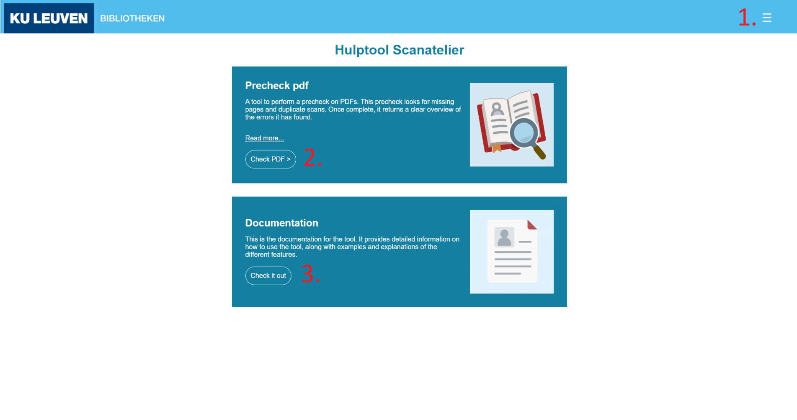
Projects
On the projects page, a user can customise and manage their projects:
- Gives an overview of all created projects.
- A new project can be created by clicking on the plus button and entering a name and export path. An example can be seen below.
- When a project is clicked, the user is navigated to a specific page for this project. Here, an overview is shown of all pdf's that have been scanned for this specific project. The project can also be edited and deleted on this page.
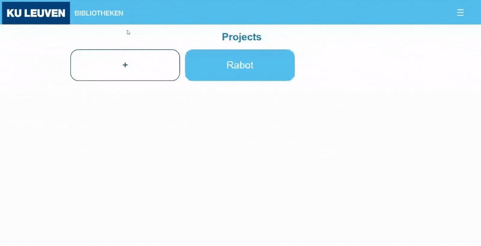
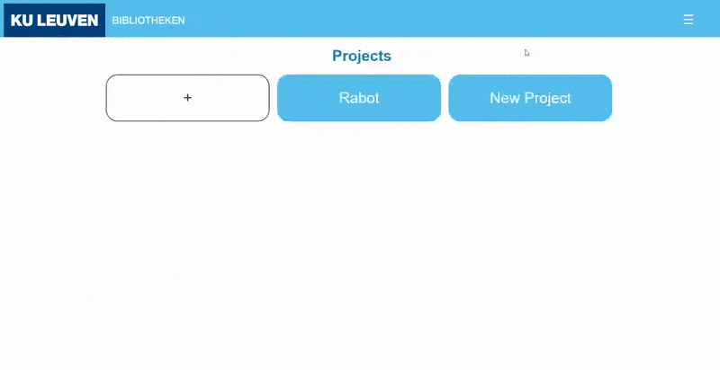
Precheck page
On the precheck page, the user sees the following:
-
Select project - Select which project you want to add the
scanned files to.
A project can be created in the projects page -
File selector - Select the files you want to check for
errors, you can select up to 20 files a time.
The selected files will be shown in the "Selected files" box on the right. - Remove file - Each selected file can be removed from the list by clicking on the red button next to it.
- Check - To start the checking process, click the button "Check".
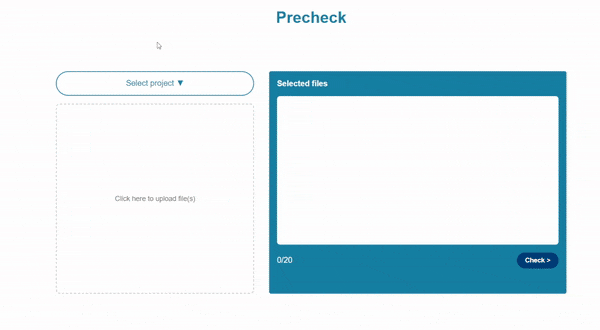
Progress page
The progress page shows the progress of the tool checking the selected files.
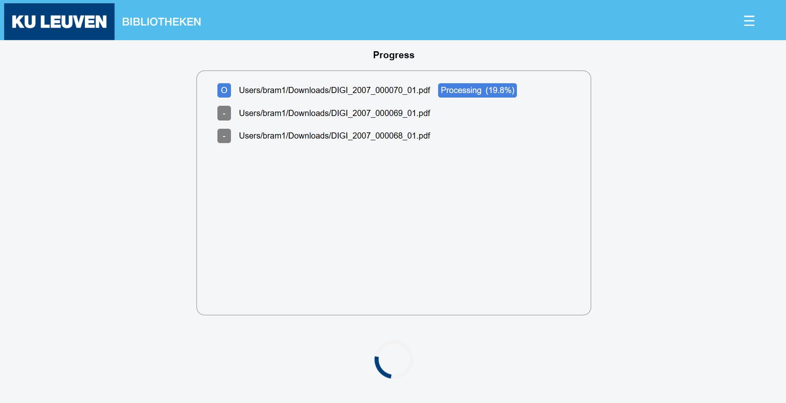
Each item of the list shows it's status:
Next to the file name, there is a blue box displayed with step the program is currently on for that file.
When it is processing the file, it also shows a completion percentage. The next and last step for a file is to compress it.
An example of how it looks during this step is displayed in the image below.
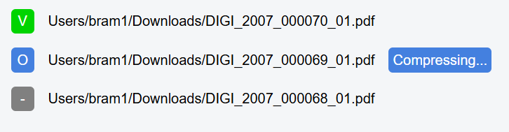
After all the files have been processed, the user can navigate to the overview to see al the files that have been checked.
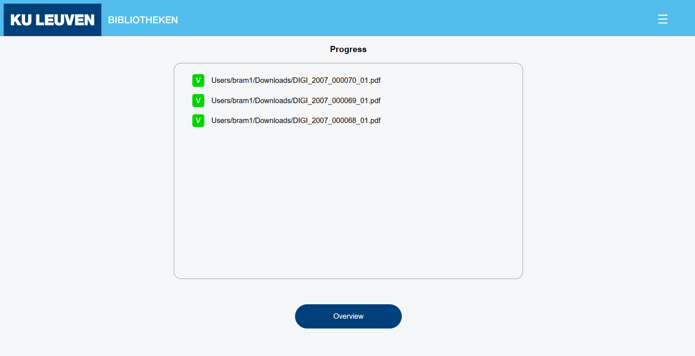
Last Run page
The last run page shows you an overview of all files that are checked in the last run of this session.
If no run has been done yet in this session, a message will be shown like below.
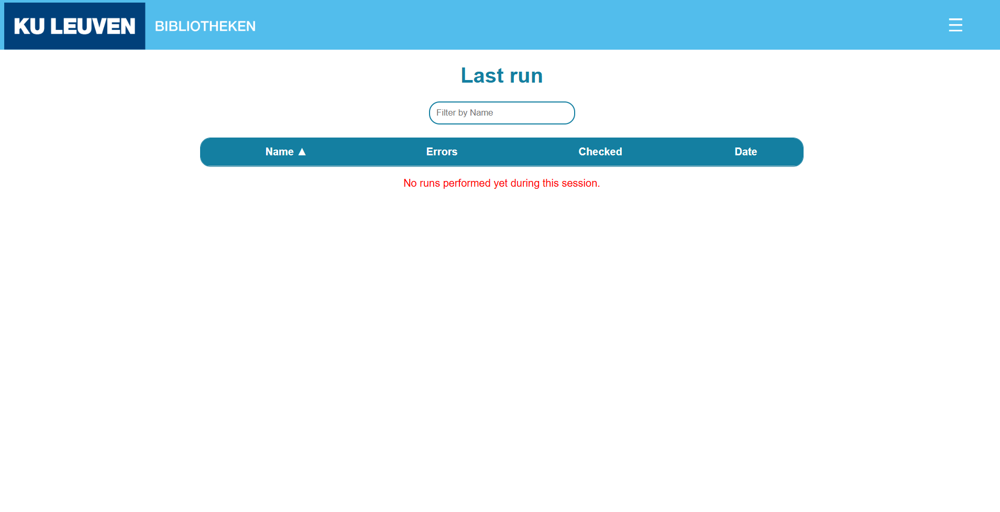
All Runs page
The All Runs page gives an overview of all checked files. A user can search for specific files in the search box.
The headers:
- Name - name of the file
- Errors - the amount of errors found
- Checked - gives the status if a file has been manually checked or not
- Date - date of check execution
- Project - to which project a file belongs to
You can filter by Name or Project by typing something in the text field below the title.
Details page
The details page summarises information of the file and a compressed version of the file for quick lookup for manual checks.
In the “log box” each error is displayed to give more information about the found error. each log is clickable and will redirect the user to the page of the given error.
There are 3 kinds of logs:
- Warning - returns a found error in the file.
- Info - gives back more context about a specific step in the process.
- Success - returns every successful found page number.
The log level will change the amount of logs that are visible in the log box.
- Level 1: only shows warnings
- Level 2: shows warnings and info logs
- Level 3: shows all logs
The level can be changed in the bottom left by pressing the wanted log level.
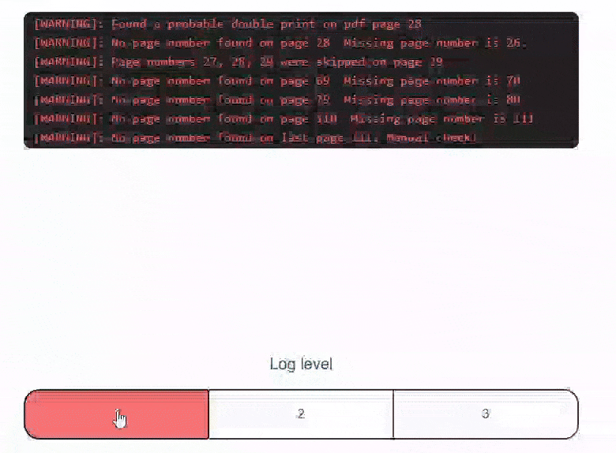
When the document is fully loaded you can press one of the messages in the log box to go to this page.
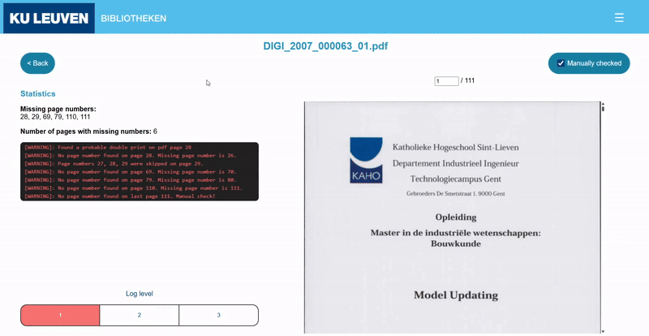
When a file is manually checked, the user can click the "Manually check" button and the file will be marked as checked.
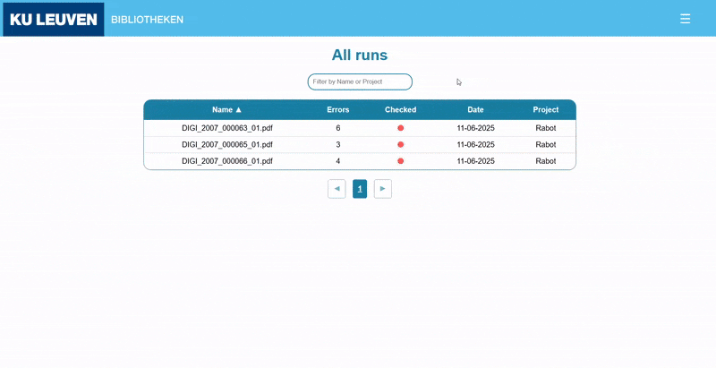